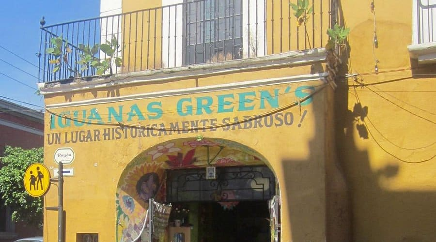

Nuestra Filosofía
En Iguanas Green's nos regimos por principios que garantizan una experiencia inmersiva, creativa y sostenible. Estos son los pilares que sostienen nuestro Santuario Gastronómico:
- Innovación con Propósito: No creamos por crear; utilizamos técnicas de vanguardia para resaltar, nunca para opacar, el sabor de nuestros ingredientes.
- Autenticidad: Honramos la tierra de Morelos. Nuestra cocina cuenta historias de la cultura local a través de una visión contemporánea.
- Sostenibilidad: Asumimos la responsabilidad del impacto de nuestra cocina. Minimizamos residuos y priorizamos proveedores locales y éticos.
- Excelencia y diversidad: La calidad no es negociable. Actuamos con el rigor de la alta cocina creando un espacio inclusivo donde la gastronomía une a las personas.